Quantifying uncertainty
Data Science in a Box
layout: true
class: middle
Recap and motivation
Data
- Family income and gift aid data from a random sample of fifty students in the freshman class of Elmhurst College in Illinois, USA
- Gift aid is financial aid that does not need to be paid back, as opposed to a loan
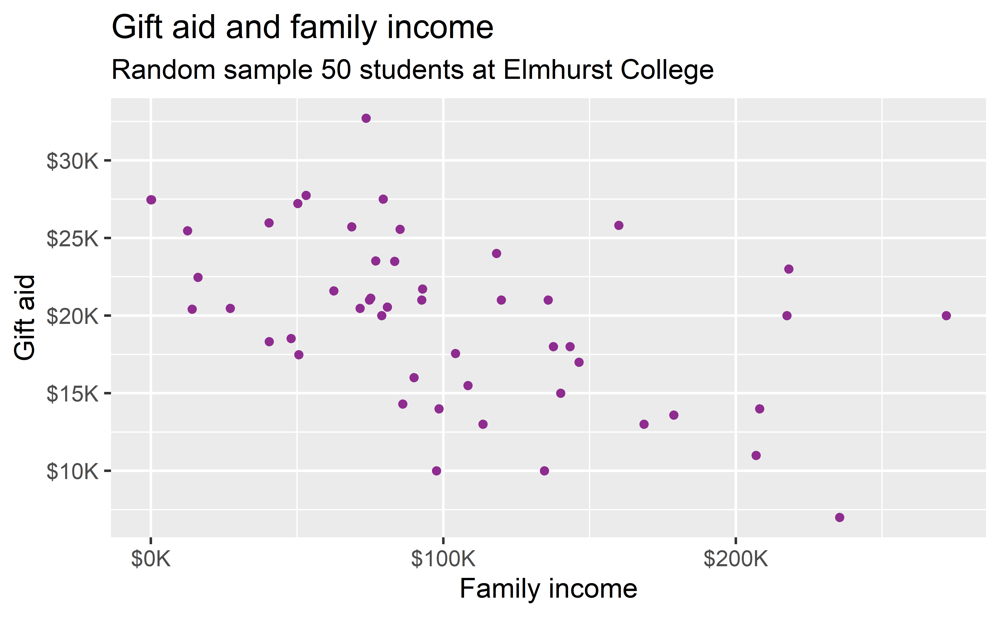
.footnote[ .small[ The data come from the openintro package: elmhurst.]]
Linear model
.pull-left[ .small[]] .pull-right[]
Interpreting the slope
.pull-left-wide[] .pull-right-narrow[]
–
For each additional $1,000 of family income, we would expect students to receive a net difference of 1,000 * (-0.0431) = -$43.10 in aid on average, i.e. $43.10 less in gift aid, on average.
class: middle
.hand[ .light-blue[ exactly $43.10 for all students at this school?!]]
class: middle
Inference
Statistical inference
… is the process of using sample data to make conclusions about the underlying population the sample came from

Estimation
So far we have done lots of estimation (mean, median, slope, etc.), i.e. - used data from samples to calculate sample statistics - which can then be used as estimates for population parameters
.question[ If you want to catch a fish, do you prefer a spear or a net?]
.pull-left[] .pull-right[]
.question[ If you want to estimate a population parameter, do you prefer to report a range of values the parameter might be in, or a single value?]
–
- If we report a point estimate, we probably won’t hit the exact population parameter
- If we report a range of plausible values we have a good shot at capturing the parameter
.center[
]
.footnote[ .midi[ Source: Gallup. Britons’ Approval of U.S. Leadership at New Low, 5 Nov 2020.]]
class: middle
Confidence intervals
Confidence intervals
A plausible range of values for the population parameter is a confidence interval.
| - In order to construct a confidence interval we need to quantify the variability of our sample statistic |
|---|
| - For example, if we want to construct a confidence interval for a population slope, we need to come up with a plausible range of values around our observed sample slope |
- This range will depend on how precise and how accurate our sample mean is as an estimate of the population mean
| - Quantifying this requires a measurement of how much we would expect the sample population to vary from sample to sample |
.question[ Suppose we split the class in half down the middle of the classroom and ask each student their heights. Then, we calculate the mean height of students on each side of the classroom. Would you expect these two means to be exactly equal, close but not equal, or wildly different?]
–
.question[ Suppose you randomly sample 50 students and 5 of them are left handed. If you were to take another random sample of 50 students, how many would you expect to be left handed? Would you be surprised if only 3 of them were left handed? Would you be surprised if 40 of them were left handed?]
Quantifying the variability of slopes
We can quantify the variability of sample statistics using
- simulation: via bootstrapping (now)
or
- theory: via Central Limit Theorem (future stat courses!)
# A tibble: 2 x 5
term estimate std.error statistic p.value
<chr> <dbl> <dbl> <dbl> <dbl>
1 (Intercept) 24.3 1.29 18.8 8.28e-24
2 family_income -0.0431 0.0108 -3.98 2.29e- 4class: middle
Bootstrapping
Bootstrapping
.pull-left-wide[ - “pulling oneself up by one’s bootstraps”: accomplishing an impossible task without any outside help - Impossible task: estimating a population parameter using data from only the given sample - Note: Notion of saying something about a population parameter using only information from an observed sample is the crux of statistical inference] .pull-right-narrow[ .huge[ 🥾]]
Observed sample
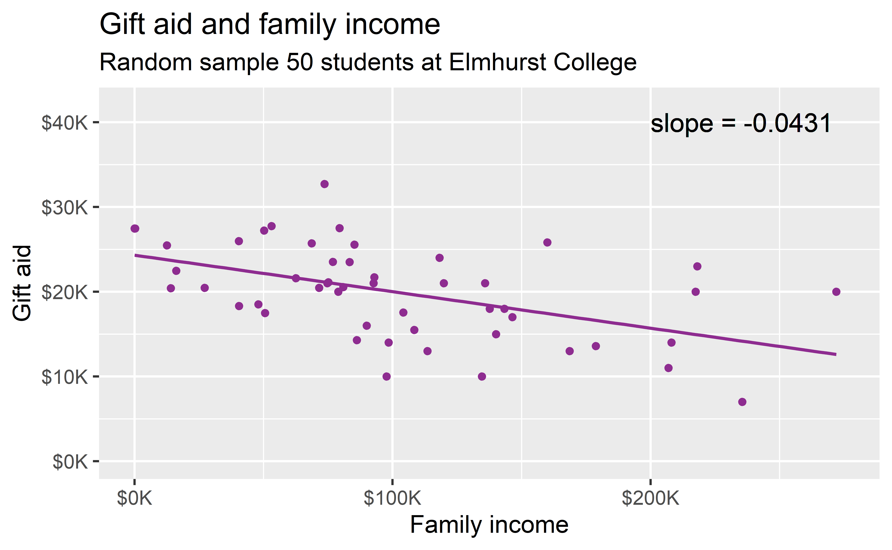
Bootstrap population
Generated assuming there are more students like the ones in the observed sample…
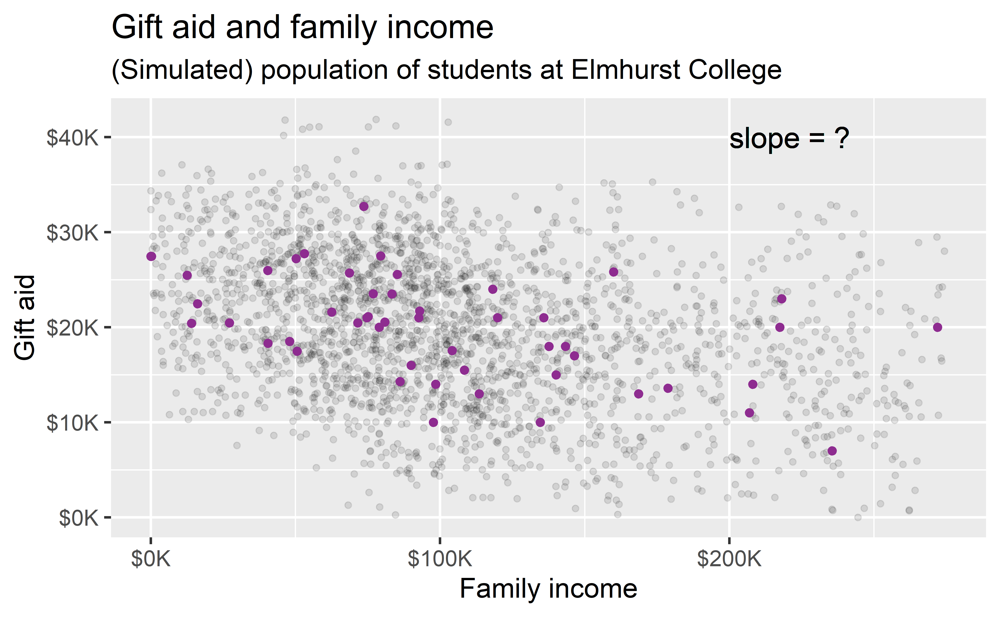
Bootstrapping scheme
- Take a bootstrap sample - a random sample taken with replacement from the original sample, of the same size as the original sample
| 2. Calculate the bootstrap statistic - a statistic such as mean, median, proportion, slope, etc. computed on the bootstrap samples |
|---|
| 3. Repeat steps (1) and (2) many times to create a bootstrap distribution - a distribution of bootstrap statistics |
- Calculate the bounds of the XX% confidence interval as the middle XX% of the bootstrap distribution
Bootstrap sample 1
elmhurtst_boot_1 <- elmhurst %>%
slice_sample(n = 50, replace = TRUE)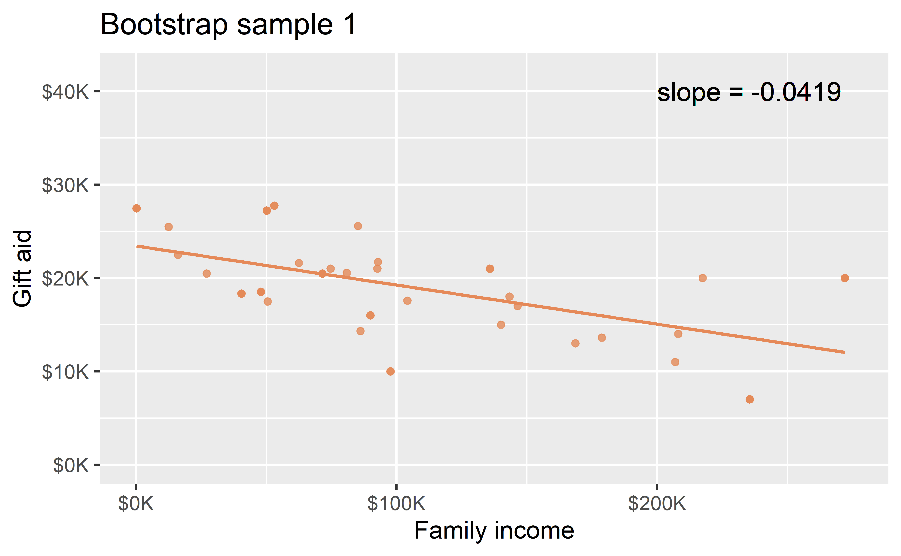
Bootstrap sample 2
elmhurtst_boot_2 <- elmhurst %>%
slice_sample(n = 50, replace = TRUE)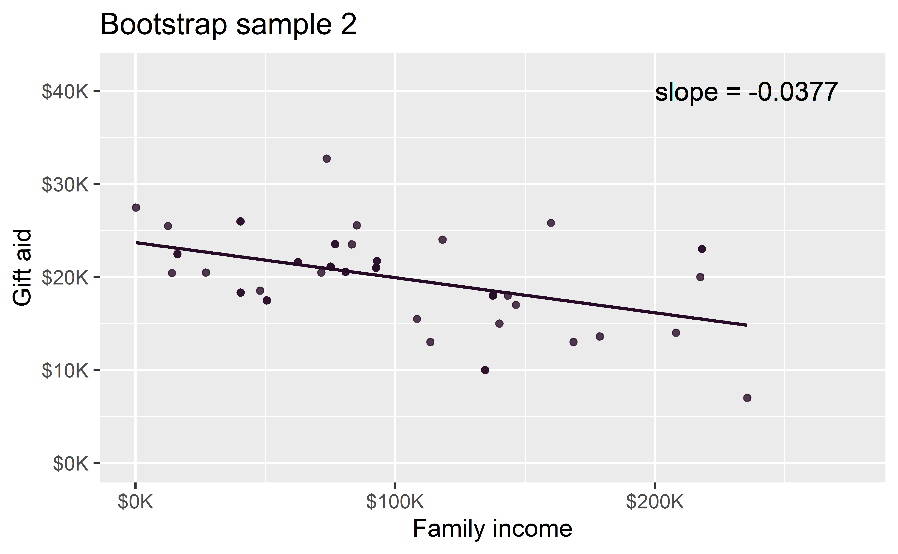
Bootstrap sample 3
elmhurtst_boot_3 <- elmhurst %>%
slice_sample(n = 50, replace = TRUE)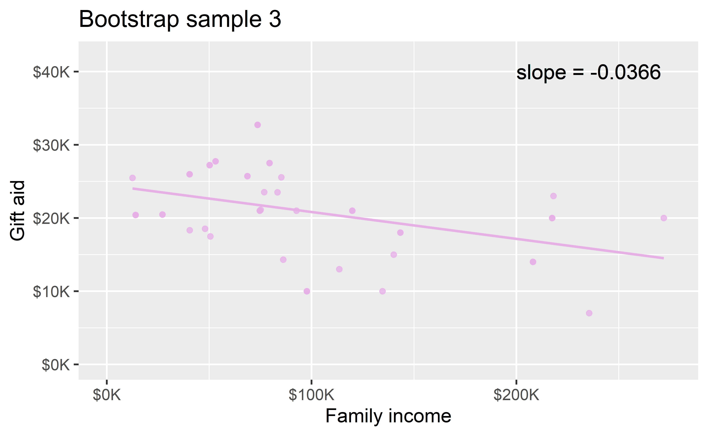
Bootstrap sample 4
elmhurtst_boot_4 <- elmhurst %>%
slice_sample(n = 50, replace = TRUE)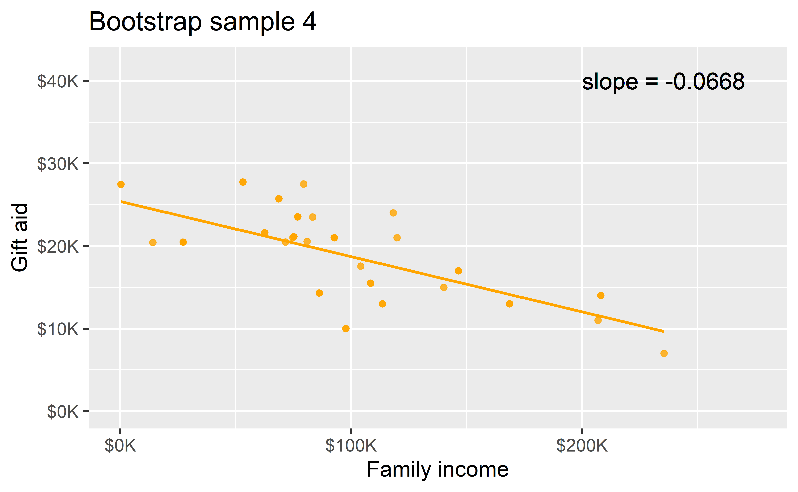
Bootstrap samples 1 - 4
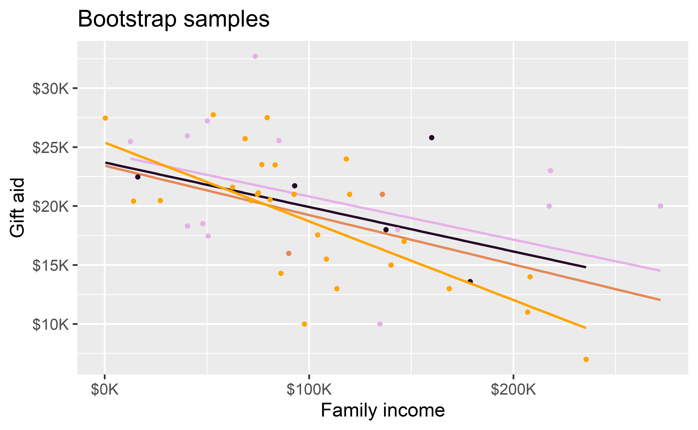
class: middle
.hand[ .light-blue[ we could keep going…]]
Many many samples…
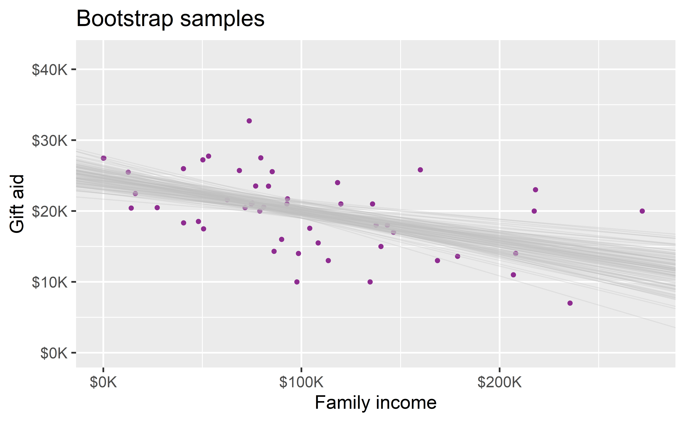
Slopes of bootstrap samples
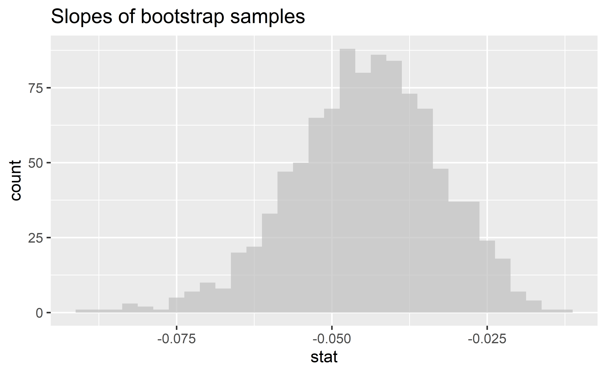
95% confidence interval
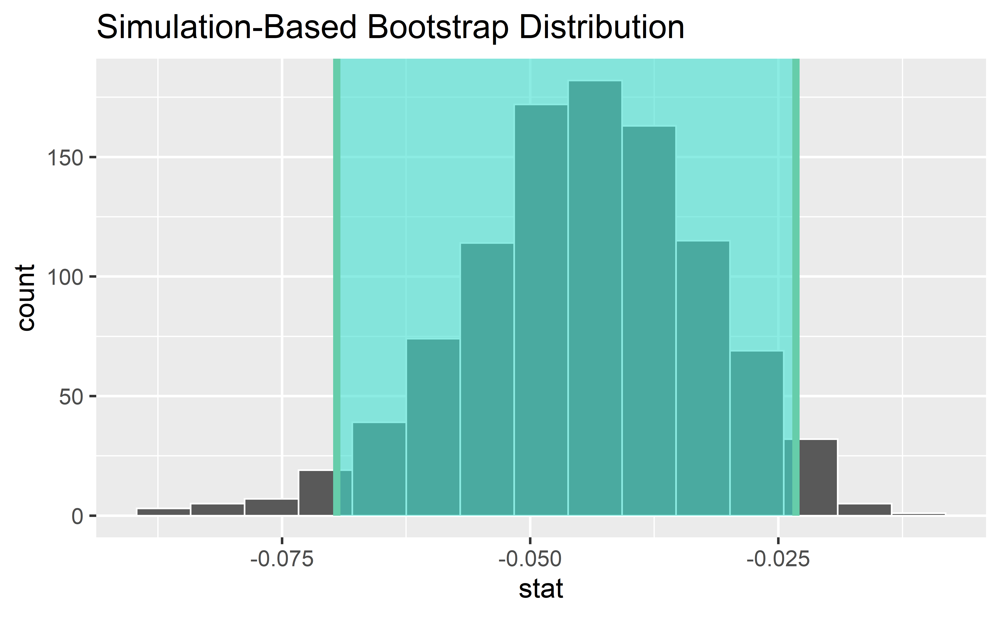
Interpreting the slope, take two
# A tibble: 1 x 2
lower_ci upper_ci
<dbl> <dbl>
1 -0.0695 -0.0232We are 95% confident that for each additional $1,000 of family income, we would expect students to receive $69.5 to $23.24 less in gift aid, on average.